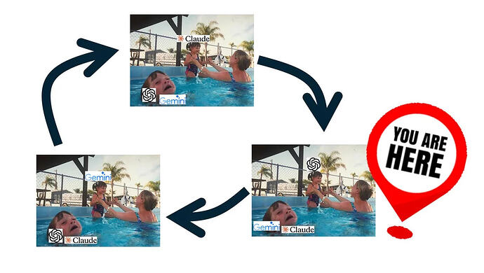
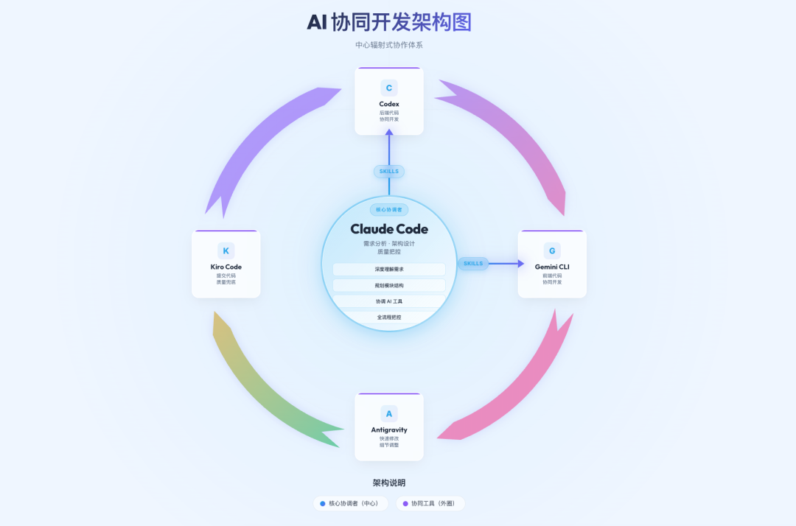
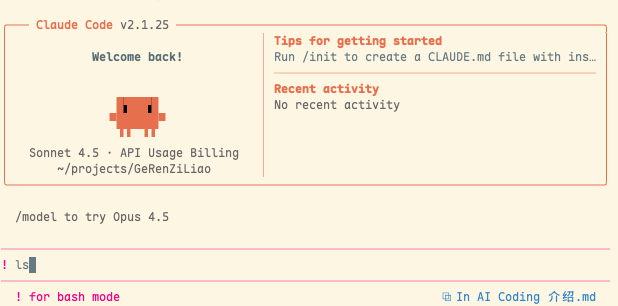

图片源自网络
AI Coding 工具发展时间线
一、行业现状：码农的红利 or 末日？
二、个人实践：多 Agent 协作工作流
2.1 工具链组合
2.2 协作架构

2.3 安装与配置
2.4 详细协作参考
三、AI Coding 技巧（以Claude Code为例）
3.1 基础信息
Haiku：快速模型，单价最低，速度最快，用于处理前期准备搜索工作
Sonnet：常规模型，能力均衡，性价比高
Opus：最强模型，价格最贵，4.5 版本迎来降价，由于更智能，能使用更快更少的步骤完成任务，变相降低消费，成为很多人的第一选择
也可通过 ClaudeCodeRouter、NewApi 等工具接入，或者办理 GLM、MiniMax、Kimi 等编程套餐来体验其他模型
3.2 核心特性
1 | |
- Plan Mode
：计划模式，CC 不会修改代码，他会整体查找分析和用户需求相关的代码与文档，给出实现方案，该模式下常常会触发 AskUserQuestion来询问用户，给出选择以补充策略。 - 默认模式
：此时会修改代码，修改时会征求用户同意 - Accept Edits
：此时会修改代码，并且不征求用户同意，直接修改 - 最佳实践
：Explore first, then plan, then code - 这是 CC 官方推荐的最佳实践，先进入 Plan 模式，让 Claude 进行需求相关代码的探索，然后进行计划，此时我们要根据计划是否完善进行审查，若有偏离及时沟通纠正。当确认计划没问题后，选择同意计划并进入 accept edits，此时 CC 会按照计划来修改代码。 因此推荐添加上述配置，默认计划模式
与 CC 讨论整体需求架构，可以粘贴需求文档、原型截图等 确定整体架构后，拆分功能模块，按探索→计划→实现→测试的步骤逐步实现模块 若是实现一个模块之后发现与预期有偏差，偏差大了→直接回退代码，重开窗口重新设计实现，特别少的局部偏差→当前窗口内要求修改，处于上述两种情况中间→新开窗口，要求修改
- MCP
：每个 MCP 的 Token 占用相对较大，通常建议仅配置必需的 MCP，如：Context7、sequential-thinking 等 - Skills
：近几个月流传出来的概念，可以看做是优化版的 MCP，采用了渐进式上下文的技术来优化上下文占用，可以在 CLAUDE.md 中指明什么时候使用什么技能，也可以在对话中明确要求。 - SubAgent
：子代理，CC 会并行调用多个子代理来完成不同的任务，也可以自定义不同的个性化子代理 完全可以通过对话的方式直接添加，比如跟 CC 说”帮我安装一下 MCP：Context7”

3.3 使用技巧
配置优化（自定义 API 接入）
1 | |
"CLAUDE_CODE_DISABLE_NONESSENTIAL_TRAFFIC": "1"：禁用非必要流量 "DISABLE_TELEMETRY": "1"：禁用遥测 上述两个配置减少非必要的请求与 token 消耗